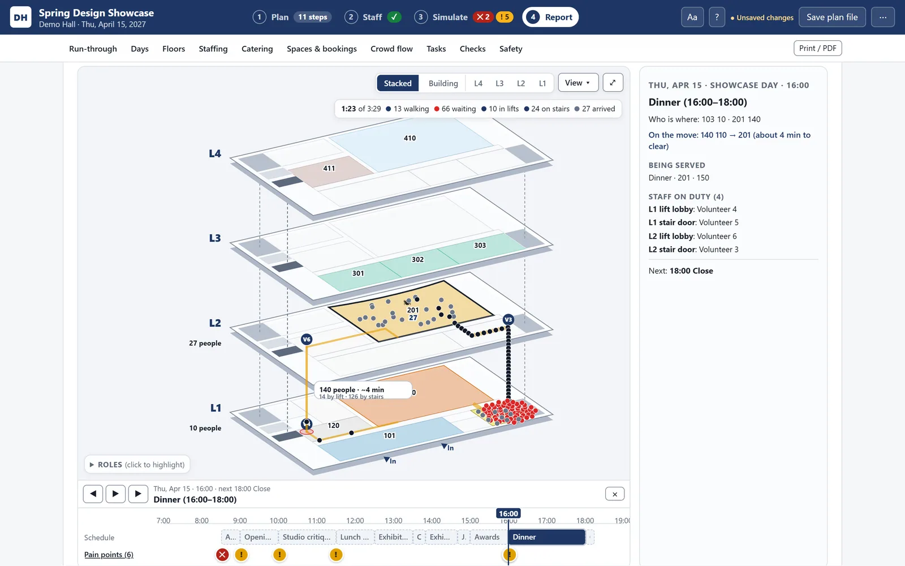
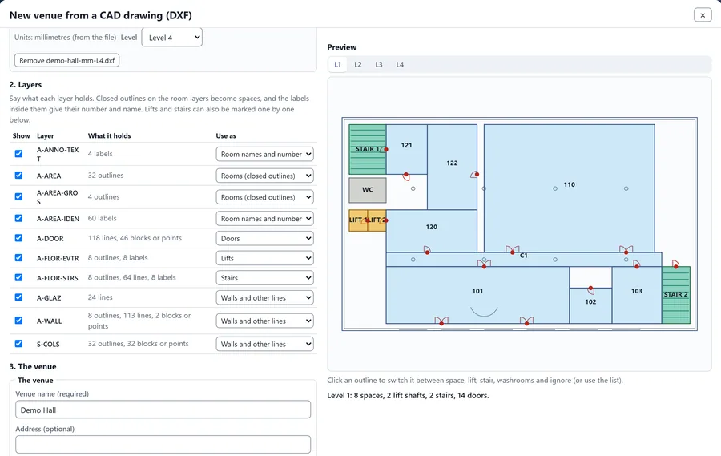
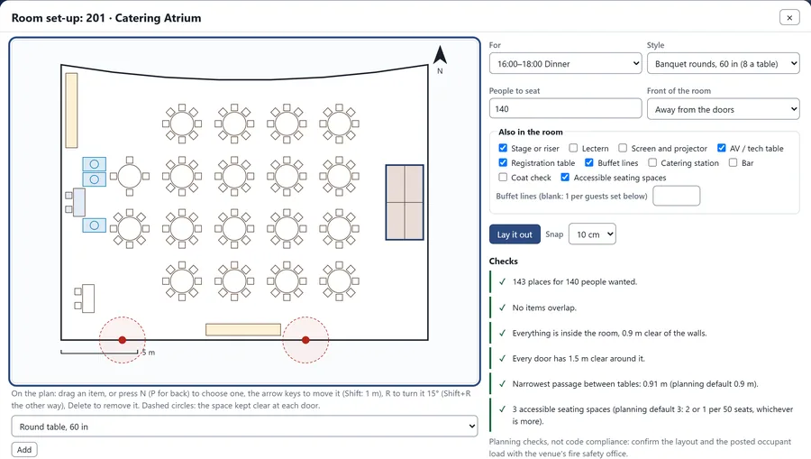

Design competition planner
One offline file that replays every move of a 200-person, five-floor event, finds the bottlenecks and suggests fixes it has already tested.


Result
- 200people across five floors
- 49automated tests, all passing
- 9room set-up styles
My team is using the offline planner.
In the demo, one fix took the slowest move from about 5 to about 4 minutes and the lift queue from 47 to 29.
The problem
A three-day student design competition moves about 200 people between five floors. The lifts, the stairs and the staffing decide whether it works, and a spreadsheet can't show what a schedule change does further down the day. I built it for a real event at U of T Engineering; every screenshot here uses Demo Hall, a fictional building, and a fictional event.
What I built
One offline HTML file with four tabs: Plan, Staff, Simulate and Report. Every step says where everyone is; the app works out the moves, replays them through doors, lifts and stairs, and offers a fix only after simulating that it helps.
Calls I made
- Retired the 3D version. The three.js version was retired; the stacked 2D view kept what 3D did well.
- Group pain points by cause. The Simulate tab went from 28 cards to 5.
- Marked every check to confirm with Fire Prevention. Aisles, clearances and accessible seating are planning checks with editable defaults.
More images
Everything shown is fictional: the building (Demo Hall), the event and the names. The screenshots come from a demo plan, never from the real event or the real building.


Full detailsHow it works, the full feature list, decisions, numbers and next steps
Tools
- Vanilla JavaScript ES modules (16, no framework)
- SVG
- localStorage and IndexedDB
- claude.ai artifact storage
- Python build and test tools
- OpenStreetMap
- PyMuPDF (to read floor-plan PDFs)
- three.js in the first version
CAD import and export
- In
A facilities team's DXF files, one per floor or one per building. A layer-mapping dialog turns them into a working floor plan.
- Set-ups
Nine room set-up styles, laid out to fit each room, with planning checks and keyboard editing.
- Out
DXF in metres (AutoCAD 2000 format), with layers per floor and furniture as CAD blocks. A round trip comes back within 1 cm.




Everything shown is fictional: the building (Demo Hall), the event and the names.
It looked impressive but answered the planner's questions slowly.
The event
The event is a student design competition. The draft plan covers three days (a launch day, a build day and a pitch day) for about 200 people:
- about 165 students in about 36 teams
- 12 judges in 4 panels
- guests, organizers and volunteers
The pitch day runs 4 panels of 9 teams in 13-minute slots, then finalists and awards, across five floors of one campus building.
The problem
A multi-floor event lives or dies on the lifts, the stairs and the staffing. Moving 200 people from the auditorium up to the catering space is the bottleneck. A spreadsheet can't show that, or what a schedule change does further down the day.
What I built: Plan, Staff, Simulate, Report
Design competition planner workflow, step by step:
- Plan: Steps say where everyone is; the app works out moves
- Staff: Posts generated from routes; shifts and break checks
- Simulate: Lifts, stairs and doors; fixes tested before offered
- Report: Stacked view, projector mode, exports
Plan
- The run of show is a list of steps, each saying "where is everyone". The app works out the moves from the step before.
- Adding a step asks whether to fit it in, push the rest of the day back, or keep the overlap.
- Crew-only steps (load-in, AV check, teardown), and a per-step owner, call time, cues, AV and Plan B.
- Groups (judges, each panel's teams, guests) keep their identity from step to step.
- Spaces and bookings with status and CSV export; catering with the 2-hour food-safety rule; and a checklist filtered by the event's features.
- Floor plans can be traced from an uploaded PDF.
Staff
- Lift, stair and door posts are generated from the routes.
- Shifts are filled in blocks of up to 3 hours.
- Checks catch double bookings and anyone working more than 5 hours without a break (Ontario's Employment Standards Act).
Simulate
- Play the whole event or one day.
- Every assumption is editable: lift cars and size, wait times, stair use, walking speed, and "what if a lift is out of service?".
- Pain points are grouped by cause, for example "9 moves between two floors are slow, held up by the lift queue".
- One-click fixes are simulated first and offered only if they help: send 70% by the stairs, open a second stair, run two waves 3 minutes apart, lengthen a step, staff a post, or raise a catering order. Each reports its effect (for example "Critical 1 to 0"), and Undo restores the plan exactly.
Report and day-of tools
- A read-only overview with a live run-through, a "Stacked" exploded axonometric view of the floors, a projector mode and print to PDF.
- "Running late +5, +10, +15 or +30" shifts steps, meals, shifts and the cue times inside their text, then lists who to tell and drafts the message. There's also a change log, and a drift check before export.
- Exports built in the browser with no libraries: a 13-sheet day-of schedule workbook (one sheet per day, cues, pitch slots, contingencies, staff schedule, signage), a planning workbook with live formulas, a one-page manager summary and per-volunteer sheets.
- Shared mode (Oct 27): published as a claude.ai artifact, the same file becomes a shared plan. It autosaves and syncs about every 15 seconds, waits while someone is typing, merges simultaneous edits three ways and reads every save back to catch races. Opened from disk, it still works offline.
CAD import and export
The planner now works from a building's own CAD drawings. It takes the DXF files a facilities team already keeps, one per floor or one for the whole building, and a layer-mapping dialog turns room outlines, labels, doors, lifts and stairs into a working floor plan. It reads the drawing's units, previews every floor live and lines drawings up with two points. Any building can become the venue, with the crowd simulation, staffing and reports running in it.
Room set-ups. For each space and session, the planner lays out the room in one of nine set-up styles, among them theatre rows, classroom tables, banquet rounds, a boardroom, a U-shape and a reception, with a stage, AV, registration, buffet lines and accessible seating. It keeps doors and walls clear, splits rows with aisles and reports the seats against the head count, which feeds the capacity checks. Items can be moved, turned or removed by mouse or keyboard, with undo.
Aisles, clearances and accessible seating are planning checks with editable defaults, each marked to confirm with Fire Prevention, and every capacity says where it comes from.
Back to CAD. The plan goes back out as a DXF in AutoCAD 2000 format, in metres and in true orientation, with one set of layers per floor and the event's head counts, staff posts, routes and furniture, ready to overlay on facilities drawings. Furniture travels as CAD blocks, and importing the file again brings everything back within 1 cm. Set-ups also print as scaled diagrams and become a rentals list for caterers and rental companies. It's still one offline HTML file, and the drawings never leave the computer.
Everything shown is fictional: the building (Demo Hall), the event and the names.
Why the planner reads DXF instead of driving AutoCAD
I evaluated Autocad-MCP, an open-source server (MIT licence) that lets Claude draw and edit DWG and DXF drawings, either by controlling AutoCAD or headless with the ezdxf library. It's capable, but it wasn't the right fit here:
- How the planner runs. The planner is one offline web page. An MCP server runs beside Claude, not inside a page, so the planner couldn't use it.
- Licences. Its live features need a desktop AutoCAD licence.
- Permissions. Its defaults (file access across the user folder, and a raw command and AutoLISP escape hatch) would need locking down, and an IT review, on a university computer.
So the planner reads and writes DXF itself, and DWG files are converted to DXF with free tools first. A possible later use: a sandboxed, separate step that turns the planner's DXF export into a plotted drawing with a title block and dimensions. The six checks I use are on the About page.
How it works
- Crowd model: door and stair flow rates from the SFPE engineering handbook; lift traffic from industry practice (2 cars of 10 people); a walking speed of 1.2 m/s, with slower lift-only riders boarding first. It's labelled "a planning estimate, not an evacuation analysis".
- Building model: floors measured from university floor plans to about ±0.3 m, floor heights from a City of Toronto by-law, and the surroundings converted from OpenStreetMap.
- Build: a Python script bundles the 16 modules into one file, and refuses to build on name clashes or leftover imports.
- Secure by default: the interface is never built from HTML strings, and no text is ever run as code.
Key decisions
- 3D was retired for 2D. The three.js version "looked impressive but answered the planner's questions slowly": labels lined up with the wrong floor, it needed camera work, and it needed the internet. The 2D version works offline, and the Report's stacked view keeps the one thing 3D did well.
- Steps hold head counts, and the app derives the moves. A wrong guess in a hand-written move had caused a critical error two hours later in the plan.
- Every capacity is labelled with its source, and a room near capacity on an unconfirmed estimate counts as critical.
- Group pain points by cause. This took the Simulate tab from 28 cards to 5.
- Two workbooks, one for the day and one for planning. All three planner reviewers asked for it.
- Safety rules. 911 always comes first, there are no phone-number fields, and staff are placeholders.
Six review rounds in a week
The reviewers were AI personas, not real users: structured AI review panels. I decided what to act on.
| Date (2026) | Round |
|---|---|
| Oct 21 to 22 | Research, the 3D three.js planner, a first event brief and a static day-of schedule workbook. |
| Oct 22 | Round 1, a task walkthrough (20 findings). Round 2, the 2D rebuild: fully offline, 468 KB. |
| Oct 23 | Round 3, a quality pass: design and accessibility research, event-rules research and a code review (16 bugs). A colour-blind-safe palette, realistic lift figures, and labour and food-safety checks. |
| Oct 24 | Round 4, UI, code and event-producer reviewers who then debated each other: per-step owner, cue and Plan B fields; print-ready sheets; the first 17 tests. |
| Oct 25 | Floors measured from floor plans. Round 5, three planner personas (a coordinator, a competition director, a venue and risk lead) scored it 4 out of 10, then 6.5, 6.5 and 7. Round 6, five specialists (visual, accessibility, QA, JavaScript, plain language), with about 50 wording changes. |
| Oct 27 | Shared online mode. |
| Oct 29 | A publishing handoff, and a brief for a lighter companion "shared planning board". |
Testing
- 49 automated tests, all passing (34 before the CAD and set-up work). The original 34 run in headless Edge and cover plan cleaning and hostile input, crowd-model invariants (more lift cars are never slower), staffing, the spreadsheet writer, pinned timings, and merge and race cases.
- Browser checks at 1366 by 768, 1920 by 1080, 800 px and 320 px wide, and at 130 to 150% text size.
- Not done yet: opening the exports in real Excel, printing on paper, and testing on claude.ai itself.
Results and status
- The offline planner is complete and tested. The online version is built but not published.
- The companion board is briefed, not built.
- I'm waiting on Facilities and Fire Prevention for lift, door and stair facts. The draft plan's own simulation shows 7 critical items to resolve.
- The planner file itself isn't posted here: its building model comes from floor plans that aren't for distribution.
| Code | About 9,050 lines of JavaScript in 16 modules; app.js alone is 5,044 lines |
|---|---|
| Testing | 49 tests (34 before the CAD work); 6 review rounds with about 17 reviewer personas |
| Round 1, before and after | Simulate went from 28 cards and 8,800 px to 5 cards and 2,000 px; Catering from 4,700 px to 855 px |
| Accessibility | Focus-ring contrast went from 1.34:1 to 11.7:1. The closest pair of role colours went from a ΔE of 4.7 to at least 10.9 under colour-blindness simulation. |
What I'd do next
- Get the lift, door and stair facts confirmed, then resolve the 7 critical items.
- Build the companion shared planning board.
- Open the exports in real Excel, print them, and test the shared mode on claude.ai.